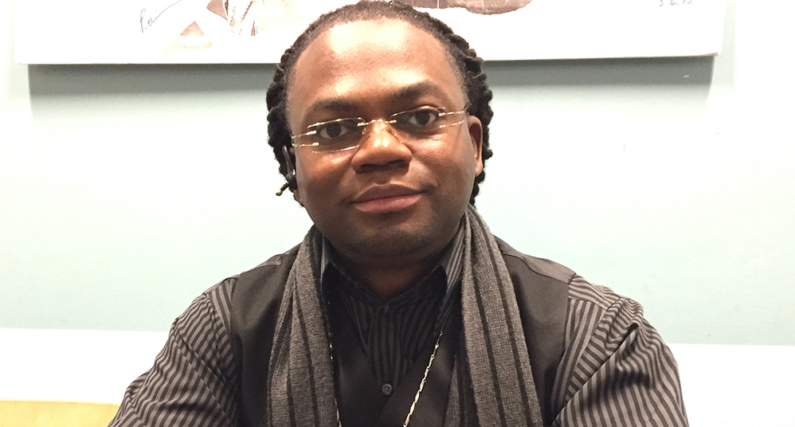

Paycheck Protection Program Leaves Behind Formerly Incarcerated Business Owners
By Joseph Jungermann (@j_mann29)
Caliph Muab-El entered the prison system at 15 as the youngest person in Wisconsin to be tried as an adult after being convicted of a shooting. He walked out 15 years later with nowhere to go and no guidance on how to acclimate back into his community.
That's what inspired him to found Breaking Barriers Mentoring. Now 38, he has established a Wisconsin network for formerly incarcerated youth in juvenile detention centers who are homeless on release so that they face an easier path back to their community than he did.
It was nearly impossible for him to find work at 30 after spending half his life in prison, Muab-El said. He stressed the importance of building networks for young people so they don't become displaced when they leave prison.
But now, in the wake of the COVID-19 pandemic, he is facing a barrier to continue to provide support.
When he sought funding through the federal government’s Paycheck Protection Program (PPP), he was disqualified because the application asks about criminal history.
"This was a big blow to us when we found out that our organization didn’t qualify because of the Payroll Protection Program excluding directly impacted people who are currently on supervision and that have a felony," Muab-El said during a group telebriefing for formerly incarcerated business owners who have been rejected by the PPP.
He is now concerned about how to pay his staff and fund his business programs and initiatives: "We are overstretching our resources."
The coronavirus has made it difficult for Muab-El to organize youth support groups, as he has been forced to hold at least 70% of meetings with staff and youth clients virtually; the rest are in-person meetings held 6 feet apart.
For the program “to exclude us out of that whole equation and give it to big businesses and special interests, that for us is a smack in the face,” he said.
JustLeadershipUSA, an advocacy group supporting incarcerated people's rights, sharply criticized the Small Business Administration (SBA) for awarding millions of dollars from the program to multiple publicly traded companies, including fast food chain Shake Shack. Shake Shack has since returned its $10 million loan in response to public backlash.
'We don't get a second chance'
"The current form of this loan program contains unnecessary constrictions that push out formerly incarcerated people while diverting millions of dollars to large corporations," said DeAnna Hoskins, JustLeadershipUSA president and CEO. "Excluding a class of people from this program simply because of their past is discrimination."
Unclear SBA guidelines to determine which companies are eligible to receive funding, combined with restrictions on those who were formerly incarcerated, have led some small business owners to give up on the application process altogether.
"Everything has a stipulation where they are stopping us now for applying for these same loans that these other businesses get to have," said Dontae Thomas, CEO of a sports apparel company called Team Chizel.
He has served three of his five years of probation after being incarcerated for 10 years. He, too, is disqualified.
"They say we get a second chance when we come out,” Thomas said. “But we don’t get a second chance because our background haunts us."
PPP is expected to receive its second round of funding totaling $310 billion. There is no word whether SBA will lift the restriction for formerly incarcerated people. SBA representatives did not respond to an email asking if restrictions would be lifted.
Teresa Hodge, co-founder and CEO of R3 Score Technologies, a mobile platform to assist people with criminal records find financial opportunities, applied early to the PPP despite her belief that she would not be approved.
Since she had been incarcerated more than five years ago, she would not be disqualified. But after the program's initial funding evaporated quickly and she got no response on her application status, she decided, "Silence is a sign of denial."
As for Muab-El and other formerly incarcerated business owners across the nation struggling to find some relief during the pandemic, the COVID-19 crisis only highlighted something he already knew.
"We have been the most impactful in the community and the federal government seems to not care about that," Muab-El said. "This is one of the most pressing civil rights matters in our time. And that is mass incarceration."